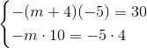
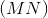
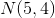
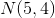
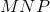

Condiții de paralelism și de perpendicularitate
Condiții de paralelism
Fie două drepte  , respectiv
, respectiv  , de ecuații:
, de ecuații:
,
respectiv
.
.jpg)
Aceste drepte sunt paralele, dacă au aceeași pantă (adică ), iar ordonatele la origine sunt diferite (adică ).
Dacă în plus ordonatele la origine sunt egale (adică ), atunci dreptele coincid (adică ).
Dacă dreptele sunt scrise sub formă de ecuații carteziene generele astfel:
,
respectiv
,
atunci spunem că dreptele și sunt paralele, notat cu  , dacă:
, dacă:
.
Dacă, în plus, primele două rapoarte sunt egale și cu ultimul, adică:
,
atunci dreptele coincid ().
Exemplu:
Fie dreptele de ecuații:
- Să se afle
 , astfel încât .
, astfel încât . - Să se afle , astfel încât .
Rezolvare:
- În primul rând, trebuie să transformăm ecuația carteziană genereală în ecuație explicită.
Pentru aceasta, împărțim relația cu  :
:
.
Pentru a îndeplini condiția , trebuie ca pantele dreptelor să fie egale.
Rezultă că:
.
Așadar, pentru  , dreptele și
, dreptele și  sunt paralele (
sunt paralele (  ).
).
Pentru ca dreptele
și să coincidă, trebuie ca rapoartele coeficienților lui  , respectiv , să fie egale:
, respectiv , să fie egale:
.
Pentru aflarea lui , obținem sistemul:

.
Pentru  , dreptele și coincid ().
, dreptele și coincid ().
Coliniaritatea a trei puncte
Fie punctele  ,
,  , , ca în figura de mai jos.
, , ca în figura de mai jos.
.jpg)
Definiția G29: Coliniaritatea a trei puncte
Spunem că punctele  ,
,  ,
,  sunt coliniare, dacă și numai dacă:
sunt coliniare, dacă și numai dacă:
- (vectorial);
- (metric);
- (cu ajutorul numerelor complexe);
- (cu ajutorul pantei).
Observație:
În rezolvarea exercițiilor și a problemelor se pot folosi oricare dintre formulele enumerate mai sus.
Exemplu:
Fie punctele , , . Să arătăm că ele sunt coliniare cu toate metodele descrise anterior.
Rezolvare:
Avem următoarea figură:
.jpg)
- Vectorial, avem că:
.
Rezultă , deci , adică vectorii  ,
,  sunt coliniari, deci punctele , , sunt coliniare.
sunt coliniari, deci punctele , , sunt coliniare.
- Metric, obținem:
.
Calculăm valoarea segmentelor care intră în ecuație:
.
.
.
Se observă ușor că .
Așadar,
punctele , , sunt coliniare.
- Cu ajutorul numerelor complexe
Punctelor , , le asociem afixele:
,
,
respectiv
.
Înlocuim în relația  și obținem:
și obținem:
.
Deci punctele , , sunt coliniare.
- Cu ajutorul pantei
Vom calcula pantele dreptelor , respectiv :
.
.
Deoarece , punctele , , sunt coliniare.
Condiții de perpendicularitate a două drepte
Atunci când am studiat unghiul dintre două drepte, am obținut relația:
,
unde este panta dreptei , iar este panta dreptei .
Condiția ca dreptele să fie perpendiculare este
.
Dacă ecuațiile dreptelor sunt scrise sub formă carteziană generală:
,
respectiv
,
atunci condiția de perpendicularitate este
.
Exemplu:
Fie punctele  , , . Să se demonstreze că dreptele sunt perpendiculare, .
, , . Să se demonstreze că dreptele sunt perpendiculare, .
Rezolvare:
Avem următorul grafic:
.jpg)
Vom demonstra că prin patru metode, după cum urmează:
- Metoda metrică
Vom demonstra acest lucru cu ajutorul reciprocei teoremei lui Pitogora. Pentru aceasta calculăm lungimile celor trei laturi ale triunghiului :
Observăm că , și conform reciprocei teoremei lui Pitagora, , deci .
- Cu ajutorul numerelor complexe
Punctelor , , le asociem afixele:
Înlocuindu-le în relația
,
obținem:
Deci .
- Metoda vectorială
, dacă .
Calculăm coordonatele celor doi vectori:
Rezultă că:
adică vectorii și  sunt perpendiculari.
sunt perpendiculari.
- Metoda analitică
Pentru ca cele două drepte să fie perpendiculare, trebuie ca produsul pantelor lor să fie  .
.
Calculăm, pe rând, fiecare pantă.
Deoarece , ne rezultă că dreptele sunt perpendiculare.